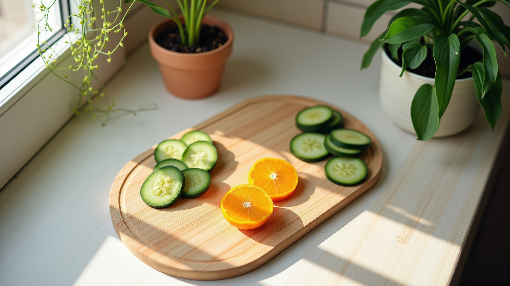

COOKING CLASS
季節を楽しむ家庭料理教室
季節の食材を使い、 家庭で無理なく作れる料理を一緒に楽しむ料理教室です。
オンラインと対面の2つのスタイルで、 ご自身のライフスタイルに合わせてご参加いただけます。

オンラインで学ぶ
ご自宅にいながら、オンラインで本格的な料理を学べるレッスンです。
対面で学ぶ
ご自宅、または最寄りのレンタルキッチンにて、 対面でオンラインと同じ内容を受けることができます。
季節の食材を楽しむ、家庭料理のページ
季節の食材を使い、 家庭で無理なく作れる料理を一緒に楽しむ料理教室です。
オンラインと対面の2つのスタイルで、 ご自身のライフスタイルに合わせてご参加いただけます。

ご自宅にいながら、オンラインで本格的な料理を学べるレッスンです。
ご自宅、または最寄りのレンタルキッチンにて、 対面でオンラインと同じ内容を受けることができます。